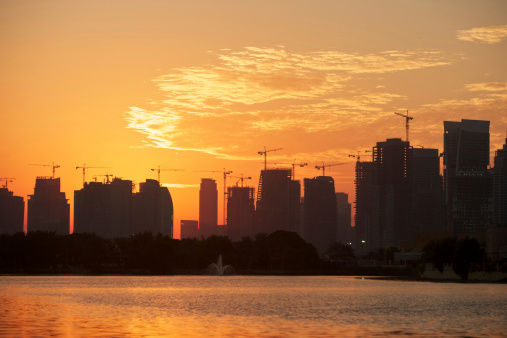

Clima En Dubai
Dubái presenta un clima tropical desértico debido a su localización en los trópicos, lo que hace que en la Clasificación climática de Köppen sea de tipo BWh.107 Los veranos son extremadamente calurosos, húmedos y con abundantes rachas de viento, con temperaturas que pueden superar los 40 °C, aunque durante la noche descienden por debajo de los 30 °C. La mayoría de los días son soleados durante todo el año. Los inviernos son algo calientes, con temperaturas que en el día llegan a más de 20 °C y por las noches suelen caer hasta por debajo de los 15 °C. Las precipitaciones en general son escasas y prácticamente nulas en los meses de la época estival.108 Durante los días veraniegos puede haber alta humedad, que puede ocasionarle incomodidad a algunas personas.
Invierno en Dubai
Entre diciembre y febrero la temperatura de Dubái oscila entre los 14ºC y los 25ºC, siendo muy buena época para viajar. Febrero es el mes más lluvioso con una media de 4 días de precipitaciones.
Verano en Dubai
El verano en Dubái puede entenderse como la época que va de mayo a octubre. Durante estos meses la temperatura media oscila entre los 25ºC y los 40ºC, llegándose a alcanzar máximas de 48ºC en los días más calurosos de julio y agosto. La probabilidad de lluvia es casi inexistente.
Mejor Epoca para viajar a Dubai
Si el viaje es por turismo y tenéis la posibilidad de elegir fecha, nuestros meses preferidos son enero y febrero aunque noviembre y diciembre también son buenos meses. A partir de abril en Dubái comienza a hacer mucho calor.
Y recuerda, cualquier mes es válido para disfrutar de las playas, aunque en invierno el agua no estará muy caliente